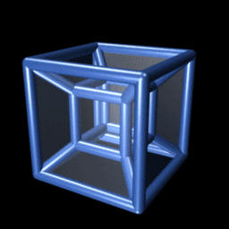

Four-dimensional space (4D) is the mathematical extension of the concept of three-dimensional space (3D). Three-dimensional space is the simplest possible abstraction of the observation that one needs only three numbers, called dimensions, to describe the sizes or locations of objects in the everyday world. For example, the volume of a rectangular box is found by measuring and multiplying its length, width, and height (often labeled x, y, and z). This concept of ordinary space is called Euclidean space because it corresponds to Euclid's geometry, which was originally abstracted from the spatial experiences of everyday life.
The idea of adding a fourth dimension appears in Jean le Rond d'Alembert's "Dimensions". published in 1754,[1] but the mathematics of more than three dimensions only emerged in the 19th century. The general concept of Euclidean space with any number of dimensions was fully developed by the Swiss mathematician Ludwig Schläfli before 1853. Schläfli's work received little attention during his lifetime and was published only posthumously, in 1901,[2] but meanwhile the fourth Euclidean dimension was rediscovered by others. In 1880 Charles Howard Hinton popularized it in an essay, "What is the Fourth Dimension?", in which he explained the concept of a "four-dimensional cube" with a step-by-step generalization of the properties of lines, squares, and cubes. The simplest form of Hinton's method is to draw two ordinary 3D cubes in 2D space, one encompassing the other, separated by an "unseen" distance, and then draw lines between their equivalent vertices. This can be seen in the accompanying animation whenever it shows a smaller inner cube inside a larger outer cube. The eight lines connecting the vertices of the two cubes in this case represent a single direction in the "unseen" fourth dimension.

The 4D equivalent of a cube is known as a tesseract, seen rotating here in four-dimensional space, yet projected into two dimensions for display.
Higher-dimensional spaces (greater than three) have since become one of the foundations for formally expressing modern mathematics and physics. Large parts of these topics could not exist in their current forms without using such spaces. Einstein's theory of relativity is formulated in 4D space, although not in a Euclidean 4D space. Einstein's concept of spacetime has a Minkowski structure based on a non-Euclidean geometry with three spatial dimensions and one temporal dimension, rather than the four symmetric spatial dimensions of Schläfli's Euclidean 4D space.
Single locations in Euclidean 4D space can be given as vectors or n-tuples, i.e., as ordered lists of numbers such as (x, y, z, w). It is only when such locations are linked together into more complicated shapes that the full richness and geometric complexity of higher-dimensional spaces emerge. A hint of that complexity can be seen in the accompanying 2D animation of one of the simplest possible regular 4D objects, the tesseract, which is analogous to the 3D cube.